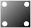
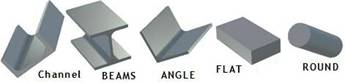

![Steel products and merchants Melbourne, Custom made steel plates to meet your needs. Base plates, road plates and angle bracket connectors. Custom made steel plates are available in a variety of shapes and sizes. They include base plates, road plates, angle bracket connectors, channel rail connectors and channel plates. Building a new steel shed could be easier with our steel base and road plates. We offer a variety of custom made steel plates that are designed to fit your needs. Steel plates are available in all shapes, sizes and thickness., Steel Products Melbourne, Econo Steel Melbourne is a steel and metal distribution service centre, Melbourne's Steel Suppliers of steel angle, steel beams, steel tubing, steel channels, steel mesh and galvanised steel. Melbourne steel suppliers, specialising in a range of steel supplies including steel tube & pipe, hot rolled structural steel, steel building products, steel roofing products and steel fencing products. Metal Apex steel,Scrap metal, cash buyer, surplus trader, Steel Purlins. Steel Melbourne, or , Cheap steel, is another way to find us. Econosteel , Econo-steel or Econo steel. We sell steel products, We sell Steel in Melbourne, Steel merchant, based in Melbourne specialising in Steel sales, wholesale and retail, Steel merchant, Steel sales, wholesale and retail, Structural Steel, Steel Plate, Builders Steel, Galvanized Steel .Metal Sales, BHP, Lysaght, One Steel, RHS , PIPE, Cheap steel, Mordialloc, Braeside, Moorabin, Beam, Purlin, Channel, OneSteel, angle iron, flat bar, base plates, cleats](https://farm4.staticflickr.com/3891/14561102439_20b767b0c1_n.jpg)


Whether you are looking for beams, pipes, sheets or other steel products, we have a large inventory of standard products to meet your needs.
Our team of experts works closely with each customer to understand their unique needs and provide customized steel products to meet those requirements.
We pride ourselves on our efficient supply chain management process. We ensure that all orders are processed quickly and delivered on time. You can trust us to provide you with the best service possible.

We stock and distribute (in Melbourne) a large range of new and second grade ( downgrade ) square and rectangular (RHS) (SHS) metal tubing in addition to circular products (PIPE), servicing industries such as pool fence manufacturers to large diameter irrigators, to name just a few. Click here for more..
We have in-house facilities that can cut, shear and prepare material to your specifications, allowing you to start on your projects. We also keep popular sizes in stock. Custom made steel plates to meet your needs. Base plates, road plates and angle bracket connectors. Custom made steel plates are available in a variety of shapes and sizes. They include base plates, road plates, angle bracket connectors, channel rail connectors and channel plates. Building a new steel shed could be easier with our steel base and road plates. We offer a variety of custom made steel plates that are designed to fit your needs. Steel plates are available in all shapes, sizes and thickness.

Steel plates can be produced to order and come in a variety of sizes and shapes. They consist of base plates, road plates, channel rail connector plates, angle bracket connectors, and more. For more information or assistance with your specifications, please contact us.
—
Steel plates are used in construction to provide rigidity and strength to constructions. They are made to order, they come in different sizes, shapes and thicknesses.

Structural products includes items such as: “Universal beams”, Channels, Angles, “T” bar etc. We sell a large range of Flat bar/plates in addition to solid round/square bar. Round bars can start at 5mm and be in excess of 400mm diameter in various grades. Click here for more..

We sell a large range of Roofing products in addition to Structural components used for building. Examples can include Roofing iron, Gutters, Purlins, Flashings etc.
We make it easy to replace your old roof with a new, beautiful roof. Regardless of the size and the complexity of your house, we offer a product that meets your needs. We also have a wide range of other structural components for you!
Roofing products and structural components designed and manufactured to high standards.
We have a wide range of roofing products and structural components that are durable, reliable, and economical. You can count on us to provide quality materials with the best customer service in the business.
We are a roofing supply company. We specialize in roofing products such as roofing materials, gutters, downspouts,

![purlins and roofing Metroll Stramit, Custom made steel plates to meet your needs. Base plates, road plates and angle bracket connectors. Custom made steel plates are available in a variety of shapes and sizes. They include base plates, road plates, angle bracket connectors, channel rail connectors and channel plates. Building a new steel shed could be easier with our steel base and road plates. We offer a variety of custom made steel plates that are designed to fit your needs. Steel plates are available in all shapes, sizes and thickness., Steel Products Melbourne, Econo Steel Melbourne is a steel and metal distribution service centre, Melbourne's Steel Suppliers of steel angle, steel beams, steel tubing, steel channels, steel mesh and galvanised steel. Melbourne steel suppliers, specialising in a range of steel supplies including steel tube & pipe, hot rolled structural steel, steel building products, steel roofing products and steel fencing products. Metal Apex steel,Scrap metal, cash buyer, surplus trader, Steel Purlins. Steel Melbourne, or , Cheap steel, is another way to find us. Econosteel , Econo-steel or Econo steel. We sell steel products, We sell Steel in Melbourne, Steel merchant, based in Melbourne specialising in Steel sales, wholesale and retail, Steel merchant, Steel sales, wholesale and retail, Structural Steel, Steel Plate, Builders Steel, Galvanized Steel .Metal Sales, BHP, Lysaght, One Steel, RHS , PIPE, Cheap steel, Mordialloc, Braeside, Moorabin, Beam, Purlin, Channel, OneSteel, angle iron, flat bar, base plates, cleats](purlins.jpg)

To contact us: Phone: +61 (03) 9587 2100 Email: info@econosteel.com
9-13 LAMANA ROAD, MORDIALLOC, MELBOURNE, VIC, 3195 AUSTRALIA
We supply Discount Steel, Discount Steel Pipe, Steel Tubing Melbourne, Secondary Steel Tubing, Steel Sales south east Melbourne, Tubular Steel Melbourne, Econo Steel Melbourne, Discount Metal Roofing.